Virtual Material Model Tool (VMMT)¶
Introduction¶
The basic problem with laminated cones is the change of the local fiber angle
due to the plane ply parts and the curved cone surface. Because of the curved
surface the fibers are lying on the geodesic path, see Figure 1. There are two
different fiber angles and at the positions  and 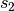. The variable s is part of the conical coordinate system. Goldfeld
[goldfeld2007] describes the local fiber angle as a function of s:
and 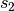. The variable s is part of the conical coordinate system. Goldfeld
[goldfeld2007] describes the local fiber angle as a function of s:
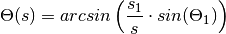
This approach is only valid for the path of a single fiber. A new approach is to describe the local fiber angle by the difference between the angle of the point of interest and the angle of the starting point of the ply part:
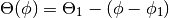
This approach can be used for ply parts with a finite width and is the key formula for this program.

Figure 1: Path of Fiber on Cone
The objective of this tool is to calculate the local fiber angle and thickness of any given point on a laminated cone. To do this the laminate will be rebuild as a virtual model. Each ply (i) consist of a finite number of parts (j) with a certain ply angle 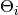 and offset angle 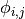. These are called ply-parts. After building the model another algorithm determines in which ply-parts a given point lies and calculates the local fiber angles and thickness.
This manual is supposed to explain the VMM-program and every function it contains. In the ALPHA-Version the program has no GUI and the connection to ABAQUS is not yet safe.
Coordinate systems¶
This program works with three different coordinate systems: 3D-Cartesian: Used for the model generation in ABAQUS
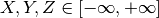
2D-Cartesian: Used for working in the plane od the unwound cone (Definition of Lines, Calculation of crossings,...)
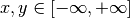
2D-polar: Used for working in the plane of the unwound cone (Rotation of points, Calculation of angles).
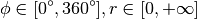

Figure 2: 2D-Polar and Cartesian CSYS
{kind=link}
Figure 3: Relationship between cone and unwound projection
Building the VMM¶
The VMM is the virtual model of the lay-up of the laminated cone. Every ply is built out of a finite number of parts. Between the parts are no gaps. In the ALPHA-Version only two different part shapes are available: rectangular and trapezoidal. When using the rectangular shape the parts overlap each other, by using the trapezoidal shape this can be avoided.
The VMM calculates the vertices of every ply-part and groups their 2D-cartesian coordinates in lists. After building this model it is possible to determine on which parts a certain point lies and calculate the local fiber angle and thickness.
The basic process flow for building the VMM is: - (1) Get Lay-up Information
For every ply: - (2) Build a prototype part
For every ply-part: - (3) Copy and rotate the prototype part
Save Layer part to VMM
The three highlighted tasks are the main tasks of building the VMM:
1. Get Lay-up Information¶
This is done by defining a number of variables:
![\begin{tabular}{l c r}
Variable & Definition & Format \\
\hline
E & Material Paramters, List of floats & [E11,E22,G12,nu12,nu21] \\
$n_{ply}$ & Number of plies, int & $i$ \\
Theta & Nominal fiber angle of each ply, List of floats & [$\Theta_1,\Theta_2,\dots,\Theta_i$] \\
Thick & Thickness of each ply, List of floats & [$t_1,t_2,\dots,t_i$] \\
$phi_{off}$ & Offset-Angle for each ply, List of floats & [$\phi_{off,1},\phi_{off,2},\dots,\phi_{off,i}$] \\
Shape & Defining the part shape of each ply, List of ints & [$S_1,S_2,\dots,S_i$] \\
$N_{parts}$ & Number of parts per ply for each ply, List of ints & [$n_1,n_2,\dots,n_i$]
\end{tabular}](../../../_images/math/6cb3eca4b3402b93759ebd0138898094d549d104.png)
Example:
E = [150, 9.08, 5.39, 0.32, 0.02]
n_ply = 6
Theta = [0.0, 0.0, 60.0, -60.0, 45.0,-45.0]
Thick = [1, 1, 1, 1, 1, 1]
phi_off = [0.0, 0.0, 0.0, 0.0, 0.0, 0.0]
Shape = [1, 1, 1, 1, 1, 1]
N_parts = [10, 10, 10, 10, 10, 10]
2. Build the prototype-part¶
Instead of calculating each part of a layer independently only one prototype part is created and afterwards its vertices are saved, copied and rotated. The exact shape of the prototype part depends mainly on the size of the cone 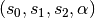., the nominal fiber angle of the ply (), the number of parts per ply (N) and the chosen shape (rectangular, trapezoidal).
The prototype-part is built by the following function:
Bpart.PPr(Theta, N, S, s0, s1, s2, alpha)
Theta nominal fiber angle of ply, float
N number of ply parts, int
S shape of ply parts, only ‘1’ and ‘2’ are valid
s0 s-coordinate of upper cone edge
s1 s-coordinate of starting point of ply part
s2 s-coordinate of lower cone edge
alpha half cone angle
For further explanation of  , and see Figure 4.
, and see Figure 4.
{kind=link}
Figure 4: Definition , and
Basically the function creates four lines (L1, L2, L3, L4) in the two dimensional plane of the unwound cone. Each line is defined by their functions:
(1)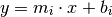
Where m is the gradient and b the intercept of the function. The gradient of the L1 is calculated by the nominal fiber angle of the ply :
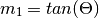
Than a first point is defined on L1:
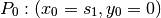
So the intercept of L1 can be calculated by transforming the upper function:
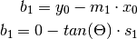
The function L1 is shown in Figure 5.
{kind=link}
Figure 5: Definition of L1
In the next step the crossing between L1 and the circles with radius of
and are calculated. A circle can be defined by:
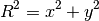
For a crossing of a Line the following formula has to be valid:
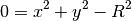
Now one can insert the function for L1:
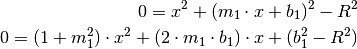
Which is basically a quadratic function and can be solved for 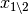 by:
(2)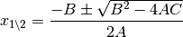
In this case the three variables are defined as:
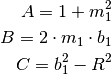
Naturally there are three different types of solutions for this equation. They can be easily distinguished by the value of the root argument:
- (1) 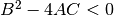: The solution is complex and the line does not touch or cut the circle
- (2) 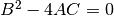: The solution is one real number and the line touches the circle at one point
- (3) 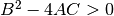: The solution consists out of two real numbers and the line cuts the circle at two different points
For the first line and the outer radius there must be two solutions,
because is smaller than . For some combinations of , and
it is possible that the L1 is not cutting the inner circle of .
The Prototype-function uses for the construction of the first Line and Points
only the positive Solution of Equation 2.
P1 and P2 are the crossing point of L1 and the circle respectively s_2,
see Figure 6.

Figure 6: Definition of P0, P1 and P2
The next step is to calculate the point P3. Therefore the angle of a single ply part is calculated by:
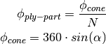
In which N is the number of ply-parts in this ply and alpha the half-cone angle. Then the coordinates of P2 are transformed to a polar form:

And add the angle 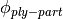 to 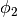 then transformed backwards, see also Figure 7.
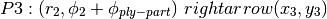

Figure 7: Creation of P3
The gradient of L3 and also the position of P4 depends on the chosen shape of the ply part. For a rectangular the gradient m_3 is equal to m_1 and so L3 is defined as:
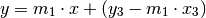
And P4 is the crossing point of L3 and the circle .
If the shape is trapezoidal the point P4 is calculated by rotating P1 by analogous to the creation of P3.
By now we have two points on each circle, but the connection line between P2 and P3 lies inside the circle . To correct this error P2 and P3 have to be moved. This is done by defining that L2 must be orthogonally to L1:
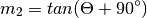
The intercept 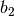 is then changed until L2 does not cut or touch the circle . The procedure for P1, P4 and L4 is equivalent, see Figure 8.

Figure 8: Definition of L2 and L4
In the end the prototype is defined by the points P1, P2, P3, P4 and the function Bpart.PPr() returns these points in the following shape:
PPr = [x1, y1, x2, y2, x3, y3, x4, y4]
In Figure 9 one can see the finished prototype part.

Figure 9: Prototype-part
Copy and rotate the prototype-part¶
After the prototype-part is finished the vertices P1 to P4 are rotated around the origin of the CSYS to achieve a full coverage of the area of the unwound cone. This is achieved by the function Bpart.Pro():
Bpart.PRo(PPr, phi_off, Theta, N, alpha)
The function needs different inputs:
PPr Cartesian Coordinates of the Prototype Part, List of 8 floats
phi_off Offset angle of ply in degree, float
Theta Nominal fiber angle of ply in degree, float
N Number of ply-parts, int
Alpha Half cone angle in degree, float
The first ply part is placed by converting the coordinates of the prototype points from Cartesian to polar form and add each to the angle of the point phi_off:
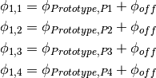
In Figure 10 is an example shown. The red trapez is the first part of the ply-parts.
The points of the other ply-parts are calculated by adding 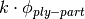 to 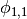, 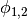, 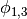 and 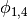. K is the running number of the ply parts.
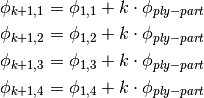
In Figure 10 this shown by the blue trapez.

Figure 10: Definition of  and
and
This procedure will go on until the whole area of the unwound cone is covered. This is checked by two simple if-statements:
- if: 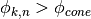,for all 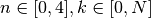
- if:  ,for all
,for all

Figure 11: Complete ply
In Figure 11 is the complete ply shown.
For the other plies the steps (2.) and (3.) are repeated.
Finding the local fiber angle and thickness¶
To investigate the effects of the changing fiber angle and thickness one has to find a method to find out in which parts a certain point lies. This problem is known as the point in polygon problem. There are several different approaches to solve this problem. This program uses a simple algorithm known as the Angle Summation Method. If a point lies inside of a convex polygon the sum of the inner angles between connecting lines of the vertices and the point is equal to 360°. If the point lies on one of the edges of the polygon the sum is equal to 180° and if it is outside of the polygon the sum is 0°. For a better explanation see Figure (TODO)
Basically one has to calculate the angle of triangle defined by three points or between two vectors connecting the given point and two neighboring vertices of the polygon. It is known that:
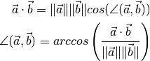
The complicated part of this function was to make sure the angles are correctly summed up and are using the same direction.

Table Of Contents
Previous topic
GUI for the Cone Ply Piece Optimization Tool